Wildpflanzen
Bestimmung
Register
Systematik
Besucher
<
Rote, fünf Blütenblätter
>
Rote, fünf Blütenblätter
Gewöhnlicher Kornrade / Agrostemma Githago
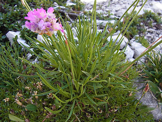
Alpen Grasnelke / Armeria Alpina
Sand Grasnelke / Armeria Maritima ssp. elongata
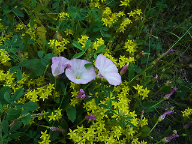
Acker Winde / Convolvulus Arvensis
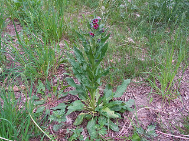
Echte Hundszunge / Cynoglossum Officinale
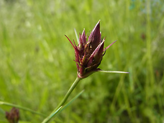
Karthäuser Nelke / Dianthus Carthusianorum
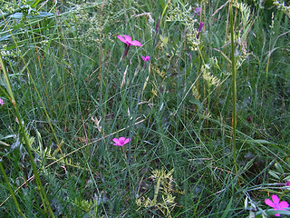
Heide Nelke / Dianthus Deltoides
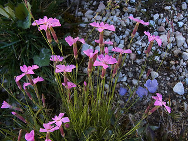
Stein Nelke / Dianthus Sylvestris
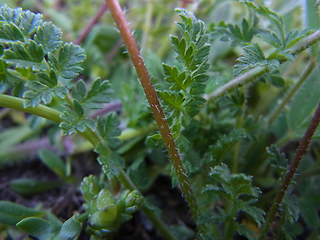
Gewöhnlicher Reiherschnabel / Erodium Cicutarium
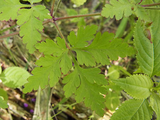
Stinkender Storchschnabel, ruprechtskraut / Geranium Robertianum
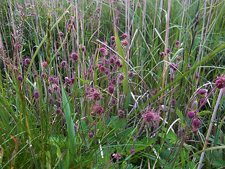
Bach Nelkenwurz / Geum Rivale
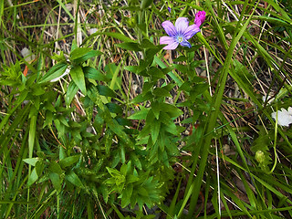
Klebriger Lein / Linum Viscosum
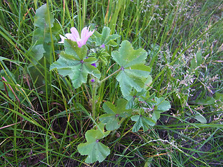
Weg-malve, Kleine käsepappel / Malva Neglecta
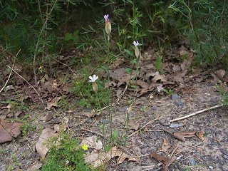
Sprossende Felsennelke / Petrorhagia Prolifera
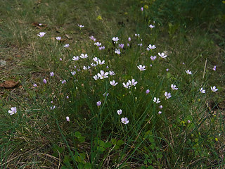
Steinbrech Felsennelke / Petrorhagia Saxifraga
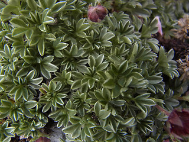
Dolomiten Fingerkraut / Potentilla Nitida
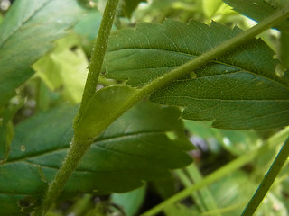
Sumpf Blutauge / Potentilla Palustris
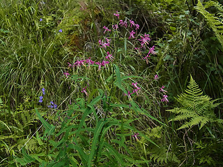
Gewöhnlicher Hasenlattich / Prenanthes Purpurea
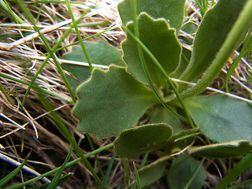
Inntaler Primel / Primula Daonensis
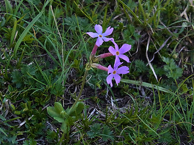
Hallers Primel / Primula Haller
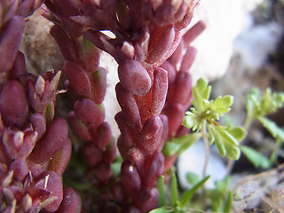
Dunkle Mauerpfeffer / Sedum Atratum
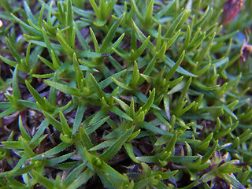
Stängelloses Leimkraut / Silene Acaulis
Rote Lichtnelke / Silene Dioica
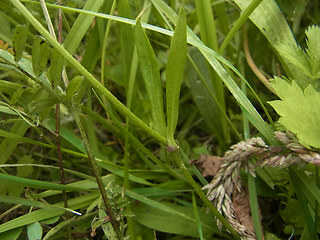
Kuckucks Lichtnelke / Silene Flos- cucul
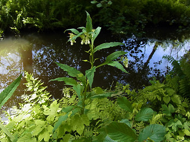
Gewöhnlicher Beinwell / Symphytum Officinale
nach oben